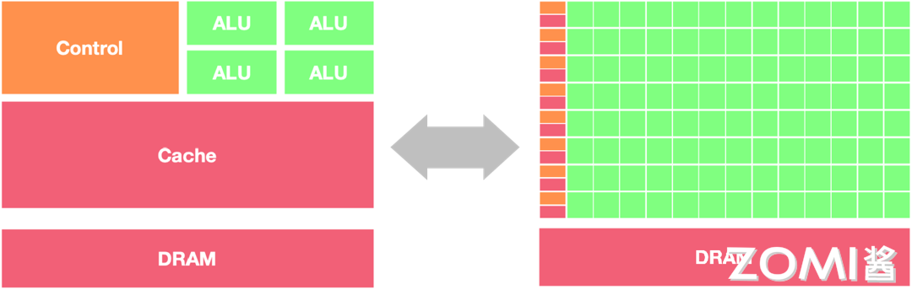
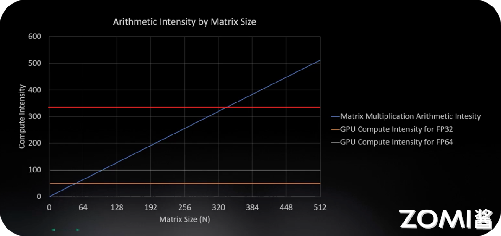

GPU原理#
学习目标#
理解GPU的发展历史、三代演进及其与CPU的本质区别
掌握GPU的工作原理，包括并行计算基础、SIMD与SIMT的区别
深入理解GPU的线程结构：Grid、Block、Thread的层次关系
掌握GPU的内存架构：HBM、L2 Cache、L1 Cache、Register的层次及作用
理解Tensor Core的原理及其在混合精度训练中的应用
章节导言#
GPU（图形处理器单元）是目前人工智能领域最重要的计算平台之一。从2012年AlexNet在ImageNet竞赛中取得突破性成果开始，GPU就在深度学习革命中扮演着核心角色。本章将深入探讨GPU的工作原理，帮助读者理解为什么GPU如此适合AI计算。
我们将首先回顾GPU的发展历史，了解从最初用于图形渲染的专用芯片，如何演变为今天通用并行计算的核心平台。然后，我们将详细分析GPU与CPU在架构上的本质差异，理解为什么GPU能够在并行计算任务中实现数量级的性能领先。
本章的重点是GPU的工作原理和线程结构。我们将探讨SIMD（单指令多数据）与SIMT（单指令多线程）这两种并行计算模式的区别，深入理解GPU如何通过大量线程超配来掩盖内存延迟，实现高吞吐量计算。
此外，GPU的内存架构是理解其性能优势的关键。我们将分析HBM高带宽内存、多级缓存结构以及寄存器文件的层次关系，理解数据在GPU中的流动方式。
最后，我们将介绍Tensor Core这一专门为深度学习矩阵运算设计的硬件单元，理解混合精度计算的原理和优势。
通过本章的学习，读者将建立起对GPU架构和计算模型的深入理解，为后续学习CUDA编程和NVIDIA架构奠定基础。
2.1 GPU发展历史#
2.1.1 GPU的诞生与图形处理#
GPU的诞生源于计算机图形学的需求。1980年代，随着个人计算机的普及，用户对图形显示的要求越来越高。传统的CPU需要同时处理操作系统、应用程序和各种计算任务，难以高效处理复杂的图形渲染工作。这催生了专门处理图形运算的芯片——GPU。
第一代GPU（1999年之前）
最早的GPU主要承担图形处理中的固定功能。1998年，NVIDIA推出了GeForce 256，这是业界首款被命名为”GPU”的图形处理芯片。第一代GPU的特点是：
固定功能流水线：只能执行预定义的图形处理任务
无可编程性：用户无法定制图形渲染算法
硬件加速：将部分图形运算从CPU转移到专用硬件
这一时期的GPU已经能够在硬件层面加速几何变换和光照计算，但整体功能相对有限。
第二代GPU（1999-2005年）
1999年，NVIDIA推出GeForce 256（正式命名为” world’s first GPU”），将变换与光照（T&L）计算从CPU转移到GPU，实现了图形处理的重大突破。
这一时期的标志性事件包括：
1999年：NVIDIA GeForce 256，首次实现硬件T&L
2000年：GeForce 2，进一步提升性能
2001年：GeForce 3，引入可编程顶点着色器
2003年：NVIDIA GeForce FX，支持像素着色器编程
第二代GPU开始支持部分可编程性，开发者可以编写顶点着色器和像素着色器来定制图形渲染效果。
2.1.2 GPU的三代演进#
GPU的发展可以划分为三个主要阶段，每一阶段都有标志性性的技术突破。
第一代：图形专用时代（1999-2006）
这一阶段GPU的核心特征是图形流水线的优化：
固定功能单元为主，少量可编程单元
严格服务于图形渲染任务
各厂商架构差异较大
2000年代初期，GPU主要被用于电脑游戏和图形工作站，专业应用领域有限。
第二代：通用计算萌芽（2006-2012）
2006年是GPU发展的重要分水岭。NVIDIA推出CUDA（Compute Unified Device Architecture）和GeForce 8系列GPU，首次将GPU从纯粹的图形处理器转变为通用并行计算设备。
这一阶段的标志性事件：
2006年：NVIDIA推出CUDA编程模型和GeForce 8800 GTX
2007年：CUDA正式发布，GPU计算开始普及
2008年：Apple推出OpenCL，开放GPU计算标准
GPU从”图形专用”走向”通用计算”，开始被广泛应用于科学计算、物理仿真、信号处理等领域。
第三代：AI驱动爆发（2012至今）
2012年，AlexNet在ImageNet竞赛中以压倒性优势夺冠，深度学习时代正式开启。GPU凭借其并行计算能力，成为AI革命的算力核心。
这一阶段的标志性特征：
2012年：AlexNet使用GPU训练，深度学习突破
2016年：NVIDIA推出Pascal架构，引入NVLink
2017年：Volta架构引入Tensor Core
2020年：Ampere架构，Tensor Core 3.0
2022年：Hopper架构，HBM3内存
2024年：Blackwell架构，2080亿晶体管
2.1.3 GPU vs CPU：架构的本质差异#
理解GPU与CPU的差异，是理解GPU为什么适合AI计算的关键。
设计哲学的不同
CPU的设计目标是通用性和低延迟：
强大的ALU（算术逻辑单元），但数量有限
复杂的控制单元：分支预测、乱序执行
大容量缓存：降低内存访问延迟
适合串行任务和复杂逻辑
GPU的设计目标是高吞吐量：
海量简单ALU，专注并行计算
简化的控制逻辑：硬件资源最大化用于计算
高带宽内存：满足大数据量并行访问
适合大规模数据并行任务
用一句话概括：CPU是一位能干的博士，一次做一件事但做得很快；GPU是一群小学生，同时做大量简单的事。
架构对比
让我们通过一个形象的比喻来理解CPU和GPU的架构差异：

CPU就像一家精品餐厅：
只有少数几位大厨（ALU），但技艺高超
有经验丰富的领班（控制单元）协调厨房运作
有大型仓库（缓存）存储食材
适合做复杂的定制菜品（串行任务）
GPU就像一家快餐连锁店：
有成百上千位员工同时工作
每个员工只负责特定的简单任务
食材快速流转，不做长时间储存
适合大规模标准化生产（并行任务）
性能特征的差异
特性 |
CPU |
GPU |
|---|---|---|
核心数 |
4-128 |
数千-数万 |
线程数 |
数十 |
数万 |
缓存 |
大容量多级 |
小容量多级 |
主频 |
3-5 GHz |
1-2 GHz |
内存带宽 |
100-500 GB/s |
1000-3000 GB/s |
适用场景 |
复杂逻辑、低延迟 |
大规模并行、高吞吐 |
为什么GPU更适合AI计算？
深度学习，特别是神经网络，具有天然的并行特征：
神经元独立计算：神经网络中，每个神经元的计算相互独立
层内并行：同一层的所有神经元可以并行计算
批量并行：多个样本可以同时处理
矩阵运算：核心是大规模矩阵乘加运算
GPU的并行架构完美匹配这些特征。举例来说，一个拥有4096个神经元的层，在GPU上可以由数千个线程同时处理，每个线程计算一个或几个神经元的输出。
2.2 GPU工作原理#
2.2.1 并行计算基础#
并行计算的概念
并行计算是指同时使用多个计算资源（处理器或计算机）来解决一个问题。分为几种类型：
任务并行：不同处理器执行不同任务
处理器1 → 任务A
处理器2 → 任务B
处理器3 → 任务C
数据并行：不同处理器处理数据的不同部分
处理器1 → 数据A1, A2
处理器2 → 数据B1, B2
处理器3 → 数据C1, C2
深度学习主要涉及数据并行。例如，一个批量为1024的样本输入，每个样本可以分配给不同的计算单元同时处理。
并发与并行的区别
并发（Concurrency）：系统能够处理多个任务，但不一定同时执行。操作系统通过时间片轮转等方式快速切换任务，给用户造成”同时执行”的错觉。
并行（Parallelism）：真正同时执行多个任务。需要硬件支持，如多核CPU或多GPU系统。
对于GPU来说，其架构天然支持并行执行：
数千个计算核心可以真正同时工作
通过硬件调度器管理大量线程
线程切换开销极低（近乎零成本）
2.2.2 SIMD与SIMT#
理解SIMD和SIMT是理解GPU编程模型的关键。
SIMD（Single Instruction, Multiple Data）单指令多数据
SIMD是一种数据并行技术。在同一时刻，对多个数据执行相同的指令。
传统方式（串行）：
a[0] + b[0] → c[0]
a[1] + b[1] → c[1]
a[2] + b[2] → c[2]
a[3] + b[3] → c[3]
SIMD方式（并行）：
[a[0],a[1],a[2],a[3]] + [b[0],b[1],b[2],b[3]] → [c[0],c[1],c[2],c[3]
一次指令执行，同时处理4个（或更多）数据元素。
SIMD的特点：
单线程执行，但数据级并行
需要硬件支持宽向量单元
数据必须对齐，类型一致
主要用于向量化计算加速
Intel的SSE/AVX指令集，ARM的NEON都是SIMD的实现。
SIMT（Single Instruction, Multiple Threads）单指令多线程
SIMT是NVIDIA在GPU上提出的并行执行模型，是SIMD的推广但更加灵活。
与SIMD的关键区别：
SIMD要求所有数据严格对齐，同步执行
SIMT允许线程独立执行，每个线程有自己寄存器
线程可独立分支，灵活寻址
SIMD：
Thread 0-31 执行相同指令，但只能访问连续对齐的内存
|_________|
|_________|
| ↓ | 同时执行
|_________|
|_________|
SIMT：
Thread 0-31 执行相同指令，但可访问任意内存地址
| Thread0 | → 数据A[0]
| Thread1 | → 数据G[7] （不同地址）
| Thread2 | → 数据K[12]
| ... |
| Thread31 | → 数据Z[99]
SIMT的优势
编程模型简单：开发者可以像写单线程程序一样写并行代码
灵活性高：每个线程可独立分支、寻址
硬件效率高：通过线程束（Warp）调度隐藏延迟
易于调试：可以像单线程程序一样设置断点
CUDA和OpenCL都采用SIMT执行模型。
2.2.3 GPU的并行计算原理#
让我们通过一个具体例子来理解GPU的并行计算原理。
AX+Y向量运算
在深度学习中，\(Y = \alpha \times X + Y\)是一个常见的向量运算（称为SAXPY）。CPU和GPU处理这个运算的方式截然不同：
CPU串行执行：
for (int i = 0; i < N; i++) {
Y[i] = alpha * X[i] + Y[i];
}
一次处理一个元素，需要N次循环。
GPU并行执行：
__global__ void saxpy(float *X, float *Y, float alpha, int N) {
int i = blockIdx.x * blockDim.x + threadIdx.x;
if (i < N) {
Y[i] = alpha * X[i] + Y[i];
}
}
数万个线程同时执行，每个线程处理一个或多个元素。
GPU如何实现高吞吐量？
GPU实现高吞吐量的关键是线程超配和流水线并行。
线程超配：GPU拥有远超过实际计算需要的线程数量。当部分线程等待内存访问时，其他线程可以立即开始计算。通过快速切换执行线程，GPU能够保持计算单元始终忙碌。
流水线并行：GPU的计算和内存访问是流水线的。多个线程的执行可以重叠，一个线程等待内存时，另一个线程在计算。
硬件调度：GPU内置的Warp调度器智能调度线程束，最大化硬件利用率。
2.2.4 内存带宽与计算强度#
理解GPU性能，必须理解内存带宽和计算强度的概念。
内存带宽（Memory Bandwidth）
内存带宽是指单位时间内能够从内存传输的数据量，通常以GB/s为单位。
内存带宽 = 传输数据量 / 时间
= (时钟频率 × 位宽 × 传输效率) / 8 bytes/s
以NVIDIA A100为例：
HBM2内存带宽：2,039 GB/s
L2缓存带宽：4,000 GB/s
L1缓存带宽：19,400 GB/s
计算强度（Compute Intensity）
计算强度是指执行计算所需的算术运算次数与数据传输次数的比值。
计算强度 = 算术运算量 / 数据传输量
对于矩阵乘法：
两个N×N矩阵相乘，需要\(2N^3 - N^2\)次运算
需要传输\(3N^2\)个数据元素
计算强度约为\(O(N)\)
屋顶线模型（Roofline Model）
屋顶线模型是评估GPU性能的理论框架：

纵轴是计算性能（GFLOPS）
横轴是计算强度（算术强度）
屋顶线由内存带宽和峰值算力决定
当计算强度较低时，性能受限于内存带宽（内存_bound） 当计算强度较高时，性能受限于峰值算力（计算_bound）
深度学习的大部分操作处于内存带宽受限区域，因此优化内存访问模式至关重要。
2.3 GPU线程结构#
2.3.1 CUDA编程模型概述#
2006年，NVIDIA推出了CUDA（Compute Unified Device Architecture），这是专为GPU通用计算设计的编程平台和计算框架。
CUDA的核心设计思想：
主机-设备分离：CPU作为主机（Host），GPU作为设备（Device）
层次化线程：通过Grid、Block、Thread组织线程
SIMT执行：每个线程执行相同程序，但处理不同数据
统一内存：简化CPU-GPU数据共享
CUDA编程的基本流程：
// 1. 分配GPU内存
cudaMalloc(&d_A, size);
cudaMalloc(&d_B, size);
cudaMalloc(&d_C, size);
// 2. 将数据从CPU拷贝到GPU
cudaMemcpy(d_A, h_A, size, cudaMemcpyHostToDevice);
cudaMemcpy(d_B, h_B, size, cudaMemcpyHostToDevice);
// 3. 启动GPU内核
dim3 block(256);
dim3 grid((N + block.x - 1) / block.x);
kernel<<<grid, block>>>(d_A, d_B, d_C, N);
// 4. 将结果从GPU拷贝回CPU
cudaMemcpy(h_C, d_C, size, cudaMemcpyDeviceToHost);
// 5. 释放GPU内存
cudaFree(d_A);
cudaFree(d_B);
cudaFree(d_C);
2.3.2 线程层次结构#
CUDA的线程组织是层次化的，从高到低依次为：
Grid（网格）
整个GPU执行的所有线程组成一个Grid
所有线程共享全局内存
Grid是最顶层的组织单位
Block（线程块）
Grid由多个Block组成
Block内的线程可以协作：
共享内存：同一Block的线程共享一块Shared Memory
同步：线程可以等待其他线程完成某操作
Block在物理上对应一个SM（流式多处理器）
Block一旦分配给SM，会一直保留到内核结束
Thread（线程）
最基本的执行单位
每个线程有唯一ID：threadIdx
线程可以访问：
私有寄存器
共享内存（同一Block内）
全局内存（所有线程）
Grid
├── Block 0
│ ├── Thread 0
│ ├── Thread 1
│ ├── ...
│ └── Thread 255
├── Block 1
│ ├── Thread 0
│ ├── Thread 1
│ ├── ...
│ └── Thread 255
└── Block N
├── ...
2.3.3 线程索引与数据映射#
在CUDA中，通过线程索引来确定每个线程处理的数据。
一维索引
__global__ void kernel(float *data, int N) {
int idx = blockIdx.x * blockDim.x + threadIdx.x;
if (idx < N) {
data[idx] = idx * 2;
}
}
blockDim.x：每个Block的线程数
blockIdx.x：当前Block的索引
threadIdx.x：线程在Block内的索引
二维索引
对于矩阵运算：
__global__ void matrixOp(float *A, float *B, float *C, int N) {
int row = blockIdx.y * blockDim.y + threadIdx.y;
int col = blockIdx.x * blockDim.x + threadIdx.x;
if (row < N && col < N) {
C[row * N + col] = A[row * N + col] + B[row * N + col];
}
}
// 调用
dim3 block(16, 16);
dim3 grid((N + block.x - 1) / block.x, (N + block.y - 1) / block.y);
matrixOp<<<grid, block>>>(A, B, C, N);
三维索引
CUDA也支持三维组织，对于3D数据处理很方便：
dim3 block(8, 8, 8); // 512线程/block
dim3 grid(16, 16, 16); // 16x16x16=4096 blocks
2.3.4 Warp调度机制#
Warp的概念
Warp是SM（流式多处理器）的基本调度单位。每个Warp包含32个并行线程，这些线程执行相同的指令，但处理不同的数据。
为什么是32？
32是NVIDIA GPU的Warp大小设计，基于以下考虑：
硬件效率：32个线程的调度开销最小
内存合并：连续的32个线程访问连续内存地址
芯片面积：平衡并行度和硬件复杂度
Warp执行模式
SIMT的核心特征：
Warp内所有线程锁步执行同一条指令
每个线程有自己的寄存器副本
线程可独立分支，但会导致执行效率下降
Warp执行示意：
时刻T0: [Thread0-31] → 执行 ADD指令
时刻T1: [Thread0-31] → 执行 MUL指令
时刻T2: [Thread0-31] → 执行 LOAD指令
分支分化（Branch Divergence）
当Warp内线程执行不同分支时，会发生分支分化：
if (threadIdx.x < 16) {
// Thread 0-15 执行这条路径
A = ...
} else {
// Thread 16-31 执行另一条路径
B = ...
}
此时GPU需要执行两次：
Thread 0-15执行，16-31空转
Thread 16-31执行，0-15空转
分支分化会降低GPU利用率，应尽量避免。
2.3.5 GPU的线程资源#
GPU通过大量线程超配来掩盖内存延迟。
NVIDIA A100的线程资源：
资源 |
数量 |
|---|---|
总SM数 |
108 |
每SM最大线程数 |
2048 |
每SM最大Warp数 |
64 |
总线程数 |
221,184 |
总Warp数 |
6,912 |
活跃线程 vs 等待线程
Active Warps：正在执行的Warp
Waiting Warps：等待调度或等待内存访问的Warp
GPU设计理念：线程数量远大于硬件计算单元数量
当一个Warp等待内存访问时，调度器立即切换到另一个Warp执行计算。通过这种方式，GPU能够保持硬件持续忙碌，最大化吞吐量。
2.4 GPU内存架构#
2.4.1 GPU内存层次概述#
GPU的内存系统是层次化的，不同层级的带宽和延迟差异巨大。
NVIDIA A100内存层次：
┌─────────────────────────────────────────────────────┐
│ HBM (显存) │
│ 80 GB, 2,039 GB/s │
│ ┌───────────────────────────────────────────────┐ │
│ │ L2 Cache (40 MB) │ │
│ │ 4,000 GB/s │ │
│ │ ┌─────────────────────────────────────────┐ │ │
│ │ │ L1 Cache (192 KB/SM) │ │ │
│ │ │ 19,400 GB/s │ │ │
│ │ │ ┌───────────────────────────────────┐ │ │ │
│ │ │ │ Register File │ │ │ │
│ │ │ │ 256 KB/SM │ │ │ │
│ │ │ └───────────────────────────────────┘ │ │ │
│ │ └─────────────────────────────────────────┘ │ │
│ └───────────────────────────────────────────────┘ │
└─────────────────────────────────────────────────────┘
各层级对比：
层级 |
容量 |
带宽 |
延迟 |
范围 |
|---|---|---|---|---|
HBM |
80 GB |
2 TB/s |
~400 ns |
全局 |
L2 |
40 MB |
4 TB/s |
~150 ns |
全局 |
L1 |
192 KB/SM |
19 TB/s |
~25 ns |
SM私有 |
Register |
256 KB/SM |
极高 |
~1 ns |
线程私有 |
2.4.2 HBM高带宽内存#
**HBM（High Bandwidth Memory）**是GPU显存的主流技术。
HBM的技术原理
HBM通过3D堆叠技术，将多层DRAM芯片堆叠在一起，通过硅通孔（TSV）连接。
传统GDDR：
GPU芯片 ←→ PCB走线 ←→ GDDR芯片
↓
限制于IO引脚数
带宽受限
HBM：
GPU芯片
↑
│ TSV (硅通孔)
↓
DRAM芯片堆叠（4-8层）
↑
│ TSV
↓
DRAM芯片堆叠
HBM的优势
超高带宽：通过更多IO实现带宽突破
低功耗：驱动电压低，信号完整性好
小尺寸：3D堆叠节省面积
HBM发展历程：
型号 |
带宽 |
单芯片容量 |
|---|---|---|
HBM |
128 GB/s |
8 Gb |
HBM2 |
256 GB/s |
16 Gb |
HBM2e |
461 GB/s |
16 Gb |
HBM3 |
819 GB/s |
24 Gb |
HBM3e |
1.2 TB/s |
32 Gb |
2.4.3 多级缓存结构#
L2 Cache
L2缓存是GPU上所有SM共享的全局缓存：
容量：40 MB（A100）
作用：缓存全局内存访问，减少显存带宽压力
特性：保持一致性，支持原子操作
L1 Cache
L1缓存是每个SM私有的缓存：
容量：192 KB（A100）
组成：L1数据缓存 + 共享内存（共享存储可配置）
带宽：是HBM的10倍
共享内存（Shared Memory）
共享内存是用户可编程的高速存储：
__global__ void kernel(float *data) {
__shared__ float sharedData[256];
// 线程协作加载数据到共享内存
sharedData[threadIdx.x] = data[threadIdx.x];
__syncthreads();
// 使用共享内存进行计算
float sum = 0;
for (int i = 0; i < 256; i++) {
sum += sharedData[i];
}
}
共享内存的特点：
同一Block内线程共享
带宽极高，延迟极低
需要手动管理同步
2.4.4 寄存器文件#
寄存器是GPU中最快的存储单位。
特性：
每SM有256 KB寄存器文件
每个线程访问私有寄存器
编译器分配，开发者无法直接控制
延迟约1个时钟周期
寄存器溢出
当线程需要的寄存器超过限制时，会溢出到L1缓存，性能显著下降。
// 编译报告示例
ptxas info : Registers used : 63
ptxas info : Local memory used : 0 bytes
ptxas info : Shared memory used : 0 bytes
// 如果寄存器超过限制（通常为255）
ptxas warning : Register spilling to local memory
2.4.5 内存访问模式优化#
合并访问（Coalesced Access）
当GPU线程访问连续内存时，硬件可以合并为一次访问：
✓ 合并访问（好）：
Thread 0 → 访问 addr+0
Thread 1 → 访问 addr+1
...
Thread 31 → 访问 addr+31
→ 一次内存事务完成
✗ 非合并访问（差）：
Thread 0 → 访问 addr+0
Thread 1 → 访问 addr+100
...
Thread 31 → 访问 addr+3100
→ 32次内存事务！
矩阵加法的合并访问：
__global__ void coalescedAdd(float *A, float *B, float *C, int N) {
int idx = blockIdx.x * blockDim.x + threadIdx.x;
if (idx < N) {
C[idx] = A[idx] + B[idx]; // 合并访问
}
}
Bank冲突（Bank Conflict）
共享内存被组织为多个bank：
连续地址分布在不同bank
同时访问同一bank会串行化
无冲突（好）：
Thread 0 → Bank 0
Thread 1 → Bank 1
Thread 2 → Bank 2
...
冲突（差）：
Thread 0 → Bank 0
Thread 1 → Bank 0 ← 冲突！
Thread 2 → Bank 0 ← 冲突！
优化策略：错开线程访问的地址偏移。
2.5 Tensor Core#
2.5.1 Tensor Core的诞生背景#
在深度学习中，矩阵乘法（GEMM）是最核心的计算操作。ResNet-50等网络的计算量中，超过90%来自矩阵乘法。
传统CUDA Core的限制：
一个时钟周期只能执行一次FMA（乘加）
矩阵乘法需要多层循环实现
硬件利用率低
Tensor Core的革命：
2017年，NVIDIA在Volta架构中引入Tensor Core，专门加速矩阵运算。一个Tensor Core在一个时钟周期内执行4×4矩阵乘加：
其中A、B、C、D都是4×4矩阵。
2.5.2 Tensor Core工作原理#
矩阵乘法并行本质
矩阵乘法可以分解为多个小矩阵的乘加操作：
C = A × B
┌─────────┐ ┌─────────┐
│ A │ │ B │
│ (M×K) │ × │ (K×N) │
└─────────┘ └─────────┘
↓ ↓
┌─────────────────────────┐
│ C = A×B │
│ (M×N) │
└─────────────────────────┘
Tensor Core将大矩阵分割为4×4子矩阵：
┌─────────────────────────────────────┐
│ A(M×K) B(K×N) │
│ ┌───┬───┐ ┌───┬───┐ │
│ │A11│A12│ │B11│B12│ │
│ ├───┼───┤ × ├───┼───┤ │
│ │A21│A22│ │B21│B22│ │
│ └───┴───┘ └───┴───┘ │
│ │
│ C(M×N) = Σ Aik × Bkj │
│ 每个Cij是A的第i行与B的第j列点积 │
└─────────────────────────────────────┘
Tensor Core执行过程：
Tensor Core在一个时钟周期内完成：
┌─────────────────────────────────────────┐
│ 1. 接收 A的一行4个FP16元素 │
│ 2. 接收 B的一列4个FP16元素 │
│ 3. 执行 4×4 乘加运算 │
│ 4. 输出 D的一个FP16/FP32元素 │
└─────────────────────────────────────────┘
混合精度计算
Tensor Core支持混合精度（FP16输入，FP32累加）：
# PyTorch中使用Tensor Core
with torch.cuda.amp.autocast():
output = torch.matmul(A, B) # 自动使用Tensor Core
输入：A, B → FP16（加速）
累加：C, D → FP32（精度）
充分利用Tensor Core性能，同时保持训练精度
2.5.3 各代Tensor Core演进#
Volta Tensor Core (第一代)
架构：V100
支持精度：FP16
每SM 8个Tensor Core
Turing Tensor Core (第二代)
架构：T4, RTX 20系列
新增精度：INT8, INT4, INT1
用于推理加速
Ampere Tensor Core (第三代)
架构：A100, RTX 30系列
新增精度：TF32, BF16
结构稀疏支持
每SM 4个Tensor Core
精度 |
计算性能提升（vs FP32 CUDA Core） |
|---|---|
FP64 |
1x（基准） |
TF32 |
8x |
BF16 |
16x |
FP16 |
32x |
INT8 |
64x |
INT4 |
128x |
Hopper Tensor Core (第四代)
架构：H100
新增精度：FP8
Transformer Engine 2.0 -动态范围自适应精度
2.5.4 混合精度训练#
混合精度训练是利用Tensor Core加速深度学习的关键技术。
为什么需要混合精度？
内存节省：FP16只占FP32一半内存
带宽提升：相同带宽传输更多数据
计算加速：Tensor Core专为FP16优化
精度保持：FP32累加避免精度损失
混合精度训练三要素：
FP16主权重：模型权重以FP16存储
FP32优化器状态：Adam等优化器状态保持FP32
Loss Scaling：放大loss避免下溢
PyTorch实现：
# 1. 创建GradScaler
scaler = torch.cuda.amp.GradScaler()
# 2. 训练循环
for data, target in dataloader:
optimizer.zero_grad()
# 自动混合精度
with torch.cuda.amp.autocast():
output = model(data)
loss = loss_fn(output, target)
# 缩放loss，反向传播
scaler.scale(loss).backward()
# 更新权重
scaler.step(optimizer)
scaler.update()
2.5.5 结构稀疏性#
结构稀疏性是提升AI芯片计算效率的重要技术。
稀疏矩阵
神经网络中存在大量冗余权重：
训练后的权重接近零
可以剪枝（pruning）移除
稀疏矩阵运算量更少
结构稀疏（2:4稀疏）
NVIDIA在A100引入2:4结构稀疏：
每4个元素中，恰好2个为0
[1, 0, 3, 0, 5, 6, 0, 0, ...] ✓ 有效
[1, 0, 3, 5, 0, 6, 0, 0, ...] ✗ 无效
稀疏Tensor Core加速
压缩稀疏矩阵（移除零值）
Tensor Core直接使用压缩格式计算
理论加速2倍
# PyTorch结构稀疏支持
import torch.nn.utils.prune as prune
# 应用2:4结构稀疏
prune.l1_unstructured(model, name='weight', amount=0.5)
本章小结#
本章我们深入学习了GPU的工作原理：
GPU发展历史：
从图形专用到通用计算
2012年后成为AI计算核心平台
与CPU的设计哲学完全不同
GPU工作原理：
SIMD vs SIMT：SIMT更灵活，支持线程独立执行
并行计算基础：数据并行是深度学习的主要并行模式
线程超配：大量线程掩盖内存延迟
GPU线程结构：
Grid > Block > Thread的层次关系
Warp是SM的基本调度单位（32线程）
线程索引与数据的映射关系
GPU内存架构：
HBM高带宽显存
多级缓存：L2 > L1 > Register
共享内存可编程控制
合并访问优化
Tensor Core：
专门加速矩阵乘法的硬件单元
混合精度训练：FP16计算 + FP32累加
各代演进支持更多精度
理解这些核心概念，为后续学习NVIDIA具体架构和CUDA编程奠定了坚实基础。
思考与练习#
架构对比：解释CPU和GPU在设计哲学上的本质差异。为什么GPU比CPU更适合执行深度学习工作负载？
SIMT理解：什么是SIMT（单指令多线程）？它与SIMD（单指令多数据）的主要区别是什么？SIMT的灵活性体现在哪些方面？
线程层次：解释CUDA中Grid、Block、Thread的层次关系，以及如何通过线程索引确定每个线程处理的数据。
内存带宽：GPU的多级内存架构是如何组织的？什么是合并访问？为什么合并访问对GPU性能很重要？
Tensor Core：Tensor Core是如何加速矩阵运算的？什么是混合精度训练？它为什么能兼顾性能和精度？
性能优化思考：如果一个深度学习模型的计算强度较低（内存受限），可以采用哪些策略来提升GPU计算效率？